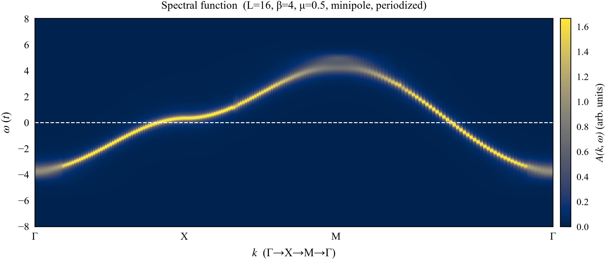
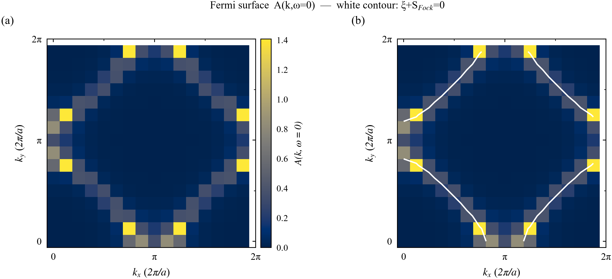
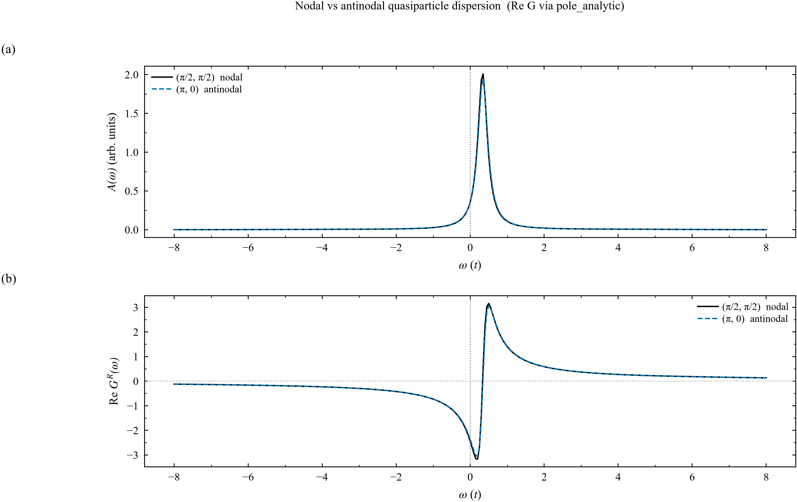
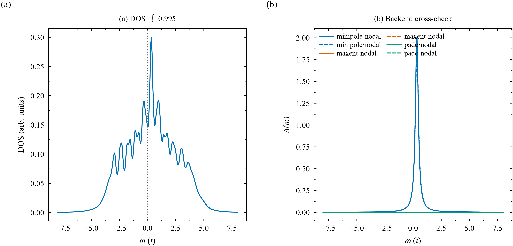

APS 出版级四联图
数据：
L=16, β=4.0, U=2.0, μ=0.5, t=1, t′=t″=0 · DLR 协变 postGW 格林函数
→ MiniPole 解析延拓（全布里渊区）· 生成于 2026-11-11

Fig A · 谱函数 A(k,ω)（高对称线）
沿 Γ–X–M–Γ 高对称线的谱函数，费米面穿越与色散分支清晰可辨。
PDF

Fig B · 费米面 A(k,0)
全布里渊区费米能处谱权重的分布。
PDF

Fig C · Nodal / Antinodal 谱函数
节点与反节点方向动量点上谱函数的对比。
PDF

Fig D · 态密度：不同延拓后端对照
MiniPole / MaxEnt / Padé 三种解析延拓后端给出的态密度相互印证。
PDF